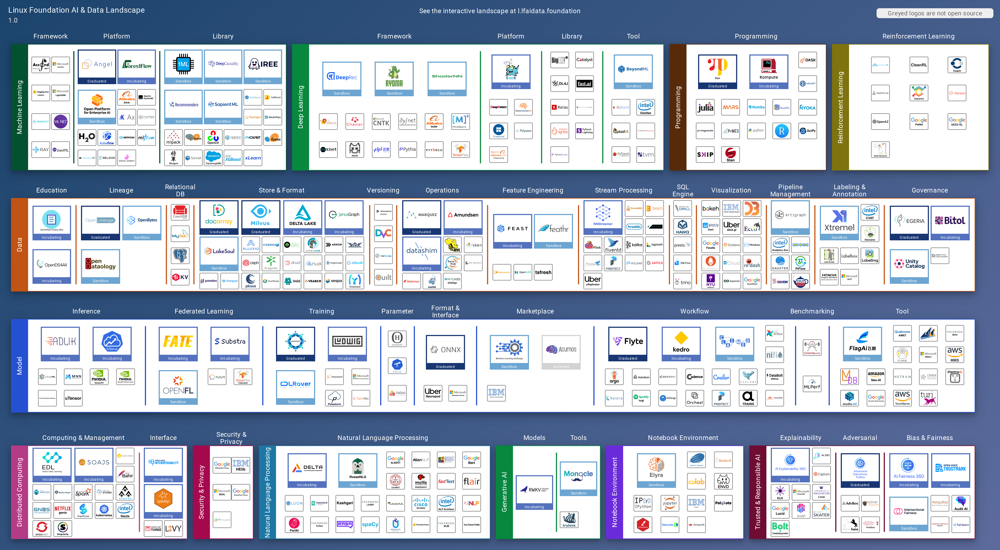
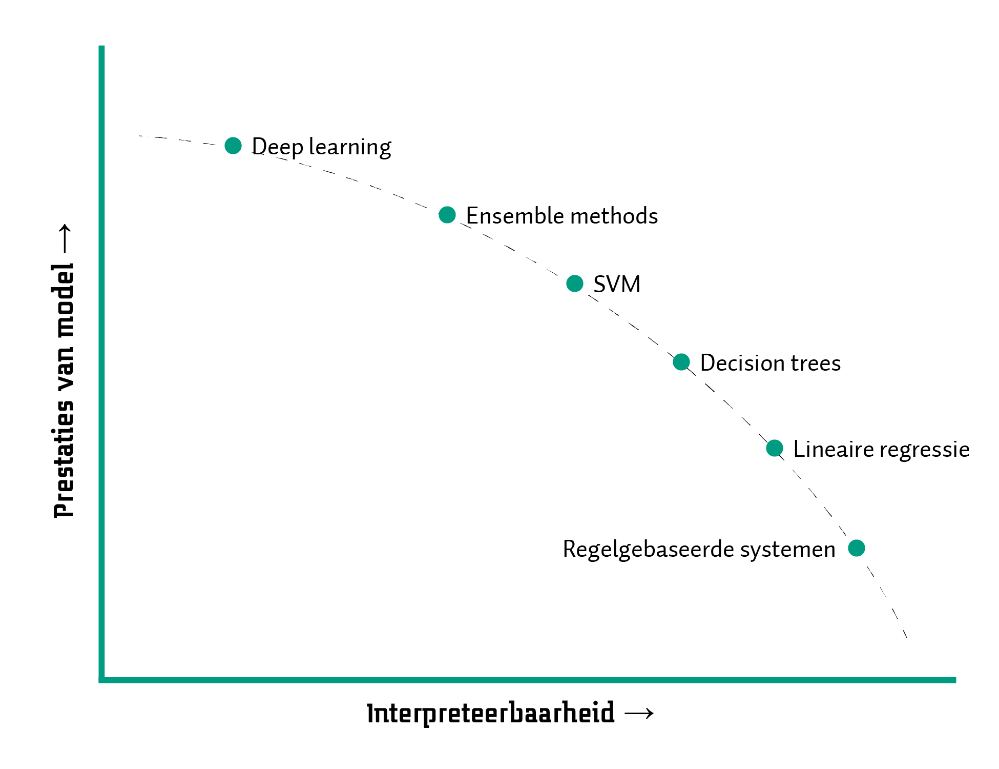

2 Uitdagingen: Het belang van wederzijds begrip
Samenvatting
Snappen wij wat AI kan en hoe dit gebeurt? En snapt AI andersom ons als mensen ook? Met de huidige hype van AI worden mogelijkheden van deze technologie duidelijk, maar er zijn ook schaduwzijdes. Ons lectoraat Ambient Intelligence zet zich in voor wederzijds begrip. We maken het proces achter AI transparant en zorgen dat AI aansluit bij de wensen van mensen.
In de introductie van deze rede beschrijf ik wat AI als vakgebied definieert en voortstuwt: het maken en onderzoeken van intelligente machines. Dit is nog steeds de overkoepelende uitdaging. Met de recente AI Lente van Generative AI zijn sommige onderdelen van deze uitdaging duidelijker geworden en anderen weer ondergesneeuwd. In dit hoofdstuk benoem ik deze uitdagingen door eerst een aantal casussen te benoemen, waarna ik de specifieke uitdagingen concreet maak met voorbeelden van projecten van ons lectoraat Ambient Intelligence.
2.1 De huidige hype en schaduwzijdes van AI
Een rechter die ChatGPT gebruikt om de uitspraak te onderbouwen.1 Chatbots die gebruikt worden om desinformatie te verspreiden in de aanloop van de Amerikaanse verkiezingen in November 2024.2 AI-modellen die op basis van auteursrechtelijk beschermd materiaal worden getraind.3 Big Tech investeren meer dan 100 miljard dollar in de eerste helft van 2024 voor de infrastructuur die nodig is voor AI.4 De eerste AI-reclamespot wordt gepubliceerd, gemaakt voor een speelgoedwinkelketen.5 Dit is een aantal voorbeelden van nieuwsberichten die deze zomer langskwamen. Eerder zagen we al voorbeelden van een AI-model dat een kunstwedstrijd won6 en een Google-onderzoeker die beweerde dat een chatbot bewustzijn had.7 Geen dag gaat voorbij, of er is weer nieuwtje over AI dat al dan niet opgeblazen wordt.
Dankzij relatief makkelijk toegankelijke websites en applicaties kunnen plots veel mensen gebruikmaken van AI om teksten en beelden te genereren. Er zijn tal van afgeleide diensten ontstaan die op basis van AI-modellen, van chatbots die gesprekken tussen historische figuren simuleren tot applicaties die papieren schetsen omzetten naar werkende websites.8 Terugkijkend naar de hype cycle zou je wellicht verwachten dat we nu massa-adoptie hebben van deze vorm van AI. Dat is tot op zekere hoogte ook zo, maar gaandeweg worden de gebreken en schaduwzijdes helderder. Voor bepaalde toepassingen werkt AI enorm goed, maar juist met deze globale aandacht wordt er (gelukkig!) nauwlettender gekeken naar de ontwikkeling van deze technologie.
Waar deze AI-modellen namelijk behoefte aan hebben is data, veel data. In de introductie benoem ik dat machine learning baat heeft bij het zien van vele voorbeelden, bijvoorbeeld duizend plaatjes om een object goed te kunnen herkennen. Voor LLM’s als GPT geldt hetzelfde: deze worden getraind op veel voorbeelden van tekst. Hieruit worden verbanden gehaald met woorden die elkaar met enige waarschijnlijkheid opvolgen, en dan niet met een paar woorden achter elkaar, maar met reeksen van duizenden woorden. Vervolgens kan een dergelijk model voorspellen welk woord waarschijnlijk een bepaalde reeks moet opvolgen. Hierin zoekt het het patroon dat past bij de context: wat zijn de stijl van de tekst en de woorden die vaak gebruikt worden? De hoeveelheid data die bijvoorbeeld gebruikt is om het GPT-4-model te trainen, wordt geschat op 10 biljoen woorden of 300 terabyte (Schreiner, 11 July 2023).9 Dit gebeurt op basis van grote datasets die openbaar te verkrijgen zijn.10
Hier dient zich een eerste schaduwzijde aan: mag een dergelijk model op basis van deze data getraind worden? Hoe zit het met auteursrecht? Media als de New York Times spanden rechtszaken hierom aan, omdat miljoenen van hun artikelen onrechtmatig gebruikt zouden zijn voor het trainen van chatbots.11 Net zoals voor tekst geldt dat ook voor beeld en alle data die gebruikt wordt om zulke modellen te trainen, zoals voor Midjourney en Stable Diffusion.12
Wat ten tweede vaak vergeten wordt, is dat met zulke hoeveelheden data ook veel mensenwerk gepaard gaat. Een model met zulke complexiteit wordt niet ‘even’ getraind. Ten eerste moet bekeken worden of de data die gebruikt worden van goede kwaliteit zijn. Dus veel van deze data wordt bekeken door mensen. Dit is uitdagend en vaak ook repetitief werk, wat ervoor zorgt dat zulke klussen uitbesteed worden. Een onderzoek van het tijdschijft Time liet bijvoorbeeld al begin 2023 zien dat dit werk via bepaalde bureaus naar landen ging waar het loon laag ligt, zoals Kenia.13 Hierin ging het om teksten die bekeken en gecensureerd moesten worden, omdat deze gingen over strafbare zaken zoals kindermishandeling, bestialiteit en moord. Ook voor onschuldigere taken worden mensen ingezet, om bijvoorbeeld te beoordelen of zoekresultaten in de Amazon-webwinkel goed genoeg zijn, of bepalen wat in politieke filmpjes wordt gezegd. Ook hiervoor worden AI-modellen gebruikt die suggesties doen, maar wel gevalideerd moeten worden door mensen.14 De mensen die dit uitvoeren worden klikwerkers en in het Engels ghostworkers genoemd. Die laatste benaming is erg toepasselijk, want het is een vrij onzichtbaar gedeelte van het werk dat vrijwel geheel via internet wordt uitgevoerd. Een schatting uit 2023 van de Wereldbank over het aantal klikwerkers benoemt namelijk dat tussen de 150 en 430 miljoen mensen die dit (in deeltijd) uitvoeren.15 Los van de humanitaire bedenkingen die hierbij mogelijk zijn, is ook af te vragen hoe efficiënt en goed dit werk gebeurt. Wellicht kost het meer moeite om de modellen te trainen dan zij uiteindelijk opleveren.]
Er zijn nog meer nadelen te benoemen van AI, zoals het energieverbuik dat van het trainen en uitvoeren van de modellen. Schattingen hiervan zijn lastig, maar bijvoorbeeld het genereren van een enkel plaatje met een AI-model kost net zoveel energie als het opladen van een smartphone, ongeveer 3 kilowattuur (Luccioni e.a., 2024). Dit werpt verdere uitdagingen op voor klimaatdoelstellingen.[Helemaal gecombineerd met datacenters, die ongeveer 1-1,5% van het globale energieverbruik verbruiken.16 Daarnaast zijn de sociaal-maatschappelijke doelen waarvoor AI kan worden ingezet natuurlijk al lang en breed uitgemeten in fictie, maar ook in realiteit. Typisch voorbeeld is het verspreiden van desinformatie, propaganda, en andersoortig materiaal door kwaadwillenden (Bird e.a., 2023; Wach e.a., 2023).
Zo is de impact van AI plots groter dan wellicht gedacht. Gelukkig zijn er ook acties die hoop bieden. Net zoals dat AI kan worden ingezet voor doelen met minder goede intenties, kan het ook hiertegen worden ingezet. Er zijn onderzoeken naar modellen die desinformatie kunnen detecteren in plaats van creëren (Aı̈meur e.a., 2023). Ook wordt er gewerkt aan efficiëntere AI-modellen, die een factor tien of honderd kleiner zijn en net zo goed presteren (Choudhary e.a., 2020). Hoewel klikwerkers op de manier van hun repetitieve taken een vorm van inkomen hebben, kunnen voor hen nog betere werkomstandigheden gecreëerd worden, of modellen ontwikkeld worden die deze taken ondersteunen (Barbudo e.a., 2023). En een initiatief dat ik verder graag benoem is GPT-NL, een project om een Nederlands open taalmodel te ontwikkelen dat zo open mogelijk is, ook om een eerlijker alternatief voor onder andere ChatGPT te zijn.17
Regulering van AI en alles wat met data gepaard gaat zie ik als noodzakelijk. Vanuit de Europese Unie zijn onlangs twee initiatieven hieromheen gelanceerd: de Data Act en de AI Act.18 De Data Act stelt regels op voor het gebruik van en toegang tot data die in de EU wordt gemaakt. De AI Act gaat in op de ontwikkeling van AI-systemen en de verantwoordelijkheid hiervoor. Hierin wordt expliciet gemaakt wat voor AI-gebaseerde technologie verboden is, bijvoorbeeld systemen die grote aantallen mensen kunnen manipuleren of emoties herkennen op werkplekken en onderwijsinstellingen. Daarnaast worden systemen geclassificeerd op basis van hun risico, waarbij onder andere goede documentatie en risicobeheersing verplicht zijn, net als voor generieke AI-systemen.
2.2 Van hype naar hoop: AI bij Ambient Intelligence
AI is een breed vakgebied en kan in alle sectoren en domeinen een toegevoegde waarde hebben. Als lectoraat zijn wij bij Ambient Intelligence domein-agnostisch: wij kijken vanuit de techniek, met de mens centraal, naar hoe we AI-technologie kunnen inzetten. Dat wil zeggen dat onze uitdagingen abstracter zijn dan specifieke beroepsvragen zoals het perfect identificeren van een ziekte of het voorspellen wanneer een machine kan uitvallen.
Centraal hierbij staat kennis van zaken als het gaat om AI. Er is meer begrip nodig van AI, wat erachter zit, en we hoe ermee kunnen omgaan. Transparantie is hierin een sleutelwoord: hoe werken zulke systemen, waarvan zijn ze afhankelijk, en wat of wie beïnvloeden ze? We moeten daarom toewerken naar een hoger niveau van AI-geletterdheid, in het verlengde van digitale geletterdheid.19 De perceptie van wat AI is en zou kunnen of moeten zijn, dat is een belangrijk maatschappelijk vraagstuk. Ik zeg vaker: AI is een tool, een stuk gereedschap. Als je enkel een hamer hebt, lijkt alles op een spijker. Is AI wel het goede gereedschap voor hetgeen je wilt oplossen? En hoe gebruik je AI dan wel (of niet)?
2.2.1 Het proces centraal
Dit is dan ook wat we voor ogen hebben bij ons lectoraat Ambient Intelligence: we onderzoeken hoe ondernemers, het onderwijs, organisaties en overheden met AI uit de voeten kunnen. Eén van de pilaren voor ons datagedreven onderzoek draait dan ook om het proces. Onderliggend hieraan gaat het ook om omgang met data, dus streven we naar verbeterde datageletterdheid.20 Hierbij gaat het onder andere om het begrijpen welke data nodig kan zijn, deze beheren, en de toegevoegde waarde van data kunnen inschatten. Data zijn uitdagend: meten is zeker niet altijd weten. Voorop staat altijd dat goede vragen gesteld moeten worden. Wat wil je met de data? Is de data beschikbaar, of moet deze nog opgehaald worden? Moet er iets gemeten worden en zo ja, hoe dan? Hoe betrouwbaar zijn die metingen? Weet je zeker dat alles gemeten is? Welke dingen meet je wellicht niet, en ben je je niet bewust van dat deze van invloed zijn op je vraag? Dit zijn vragen die vragen om een goede aanpak. Bij ons lectoraat hanteren we voor de analyse van data een proces dat CRISP-DM genoemd wordt: het CRoss-Industry Standard Process for Data Mining (Schröer e.a., 2021).

CRISP-DM is context-onafhankelijk: het kan in ieder domein gebruikt worden. Het is een methode om iteratief te ontdekken wat de waarde van data is en deze vervolgens te realiseren. Juist voor het toepassen van AI is een methode als CRISP-DM essentieel.21 Dit proces bestaat uit zes fasen: Business Understanding, Data Understanding, Data preparation, Modelling, Evaluation en Deployment. In ieder hiervan worden verschillende taken opgepakt, bijvoorbeeld om te achterhalen wat het doel is in de ‘bedrijfscontext’. AI toepassen is waarschijnlijk nooit het doel, maar kan een middel zijn, bijvoorbeeld om te voorspellen wanneer fouten zich kunnen voordoen in een productieproces en deze vervolgens te voorkomen. Of om te analyseren in welke groep een revaliderende patiënt zich bevindt, om hierop een behandelplan aan te passen. In de fase Modelling kan AI toegepast worden als de context zich daarvoor leent: er is genoeg data van voldoende kwaliteit voor een bepaald algoritme. Voordat men op dat punt aankomt, moeten de data, als die er al zijn, verkend en opgeschoond worden (Chu e.a., 2016). En daar komen de vele vragen weer. Zijn alle variabelen die geanalyseerd moeten worden wel gerepresenteerd in de data? Wie of wat heeft de data verzameld? Wellicht wijzen de antwoorden op bias: een (onbewuste) voorkeur voor of beïnvloeding van de data (Ntoutsi e.a., 2020). Dit alles kan er al direct voor zorgen dat een AI-techniek mogelijk verkeerde uitkomsten gaat genereren. Zoals dat in jargon heet: garbage in, garbage out.
AI toepassen is geen kwestie van data aan een algoritme geven. Juist om dit idee duidelijk te krijgen hebben we als lectoraat gewerkt aan AI-trainingssessies als resultaat van het project Data in Smart Industry.22 Deze zijn beschikbaar als open-access materiaal, met ondersteunende bronnen en oefeningen via deze website.23 Deze uitdagingen van dataverwerking waren bijvoorbeeld het geval in projecten over het automatisch detecteren van objecten in spoorwegomgevingen, waarbij honderden gigabytes aan data beschikbaar waren uit laserscans.24 Hoe nauwkeurig was deze data, en is dat wel nodig? Welke algoritmes zijn van toepassing? Hoe trainen we een efficiënt model? Wat zijn goede manieren om de data te annoteren voordat we kunnen trainen?25
Wat duidelijk mag zijn, is dat er veel stappen gezet moeten worden om tot een goede data-analyse en inzet van AI te komen. Tot op zekere hoogte kan dit geautomatiseerd worden, want de eerste fasen vragen wel degelijk om mensenwerk. Deze automatisering is een belangrijk onderwerp in het onderzoek van het lectoraat Ambient Intelligence. Een typische manier hiervoor, die verweven is met CRISP-DM, is DataOps en specifiek Machine Learning Operations (MLOps) (Kreuzberger e.a., 2023).26 MLOps is een set van praktijken die gericht zijn op het betrouwbaar en efficiënt in productie brengen en onderhouden van machine learning-modellen. Het combineert aspecten van machine learning, DevOps en data-engineering om het hele levenscyclusbeheer van machine learning te stroomlijnen. MLOps omvat onder andere de automatisering van alle stappen in het verwerken van data, versiebeheer hiervan, het geautomatiseerd testen en implementeren van modellen, en inzicht geven in modelprestaties.
Naar de best practices op dit gebied voeren wij toegepast onderzoek uit in een project als DataFlow. Hierin draait het om het vaststellen van de huidige methodes, tools en technieken om efficiënter met data om te gaan, specifiek als het gaat om data-analyse. Er is namelijk een veelvoud aan verschillende raamwerken, softwarepakketten en libraries, zoals de figuur hieronder laat zien.27 Feitelijk teveel om in één keer een afgewogen keuze te maken. Daarom trekken we in dit project op met bedrijven om tot een selectiemethode te komen die hen, en anderen, zal helpen bij het maken van die keuze.

En als je eenmaal met AI aan de slag kunt gaan, met grote hoeveelheden data, dan is er keuze te over voor alle verschillende technieken, zoals ik in het vorige hoofdstuk al benoemde. Afhankelijk van het type data (tekst, beeld, sensormetingen, etc.) en het type probleem (classificatie, regressie, tekstgeneratie, etc.), zijn bepaalde algoritmes wel of minder geschikt. Ook wat dit betreft zijn er mogelijkheden of om deze selectie te automatiseren, of in ieder geval het zoeken naar de goede instellingen van een specifiek algoritme (Kerschke e.a., 2019; Yang & Shami, 2020).
Maar als we alles zo goed als mogelijk willen automatiseren, hoe houden we als mensen dan grip op het proces?
2.2.2 Het begrip centraal
Hierin zit de balans: wat automatiseren we in de machine, en wat laten we expliciet over aan mensen?
Als lectoraat pakken we niet alle uitdagingen van AI zelf aan. Hiervoor werken we allicht samen met andere lectoraten, universiteiten, bedrijven en organisaties, want zij hebben iets dat wij niet voor hen kunnen invullen: domeinexpertise. De domeinexpertise van Ambient Intelligence zelf richt zich op IT, data en AI. Deze technologische inzichten passen we toe in verschillende domeinen, maar we hebben niet al die kennis in pacht. Domeinexpertise is cruciaal, bijvoorbeeld om te begrijpen hoe data geïnterpreteerd moeten worden. Is een 7 goed of niet? Als een patiënt revalideert in drie maanden, wat betekent dat? We zien opeens geen data meer in een bepaalde periode, wat is er aan de hand?28 Begrip van data en de uitkomsten van AI is niet iets dat de machine direct voor ons kan doen. Het kan ons van alles voorschotelen, maar het is aan ons om het te interpreteren.
Human-centered AI is gericht op het zoeken naar die balans tussen mens en machine (Shneiderman, 2020). De aanpak hierbij is dat onderzocht moet worden welke niveaus van controle mensen moeten hebben. Soms moet de balans meer naar de één of ander uitwijken, om te voorkomen dat mensen overbelast raken met details (specifieke berekeningen van een deeplearningalgoritme) of dat het AI-model een ongewenste afweging maakt (beslissen om wel of niet te opereren). Dit is natuurlijk verbonden aan de ethische kanten van AI, waar gelukkig de laatste jaren meer en meer aandacht voor begint te komen. Dit is niet per se onderzoek wat het lectoraat Ambient Intelligence uitvoert. Wij zijn technischer van aard, maar houden wel degelijk rekening met deze implicaties en principes van verantwoorde of responsible AI (Dignum, 2019). Het gaat hierbij om de ELSA: de ethische, legal (juridische) en sociomaatschappelijke aspecten van AI. Zulke aspecten dienen kritisch worden afgewogen door ontwikkelaars en gebruikers van AI. De AI Act van de EU is een goede stap naar regulering van AI, zodat deze op een verantwoorde manier ontwikkeld wordt.
Als wij als mensen willen begrijpen wat AI inhoudt, is geletterdheid over dit onderwerp gewenst, zoals ik eerder benoemde. Maar we kunnen verder gaan. We kunnen systemen ontwikkelen die de werking van AI uitlegbaar maken. Dit idee is gevangen in de term Explainable AI (XAI) (Arrieta e.a., 2020; Dwivedi e.a., 2023): AI die begrijpelijk of interpreteerbaar is, waardoor mensen de uitkomsten van een AI-model beter op waarde kunnen schatten. AI kan gebruikt worden om data om te zetten in informatie op verschillende manieren: de algoritmes die bepaalde taken kunnen uitvoeren. Sommige algoritmes produceren modellen die simpel zijn of goed te volgen, zoals een formule die een rechte lijn aangeeft, bijvoorbeeld om aan te geven dat gemiddeld, hoe meer oppervlakte een huis heeft, hoe hoger de vraagprijs voor dat huis is. Zo’n verband wordt al gauw moeilijker uit te drukken als er meerdere variabelen een rol gaan spelen.29 Bijvoorbeeld als er tientallen, misschien honderden variablen zijn die van invloed zijn op de prijs van een huis. Maar ook beslisbomen kunnen gemaakt worden met AI, waarin er keuzes worden gemaakt door in een soort flowchart te kiezen op basis van de waarde van bepaalde variabelen. Met deep learning wordt het al een flink stuk lastiger: hiermee worden modellen gemaakt die bestaan uit tientallen lagen met duizenden neuronen. Een extreem voorbeeld is GPT-4, waarvan geschat wordt dat het model 1,8 biljoen parameters bevat (Schreiner, 11 July 2023).

Met zulke complexe modellen is het voor mensen in eerste instantie niet mogelijk om te begrijpen wat er in het model gebeurt. Hierom worden het dan ook black box-modellen genoemd (Guidotti e.a., 2018). Dat het niet traceerbaar is hoe een model tot een uitkomst komt kan leiden tot verschillende dingen. Wellicht neemt iemand wat het model produceert simpelweg voor waar aan, misschien ten onrechte, wat zorgt voor risicovolle gevolgen. Of iemand die twijfels heeft bij de uitkomst, vertrouwt het toch niet, en laat het model voor wat het is. Hierbij ontstaat er een gemiste kans als het model toch betrouwbare resultaten geeft. Er is dus noodzaak voor XAI die op een manier mensen laat interpreteren wat in het model gebeurt (Molnar, 2022).30 Dit kan bijvoorbeeld door grafisch weer te geven welke variabelen het belangrijkst zijn in de beslissing van een model, zodat een mens kan interpreteren of hier een logische verband tussen zit. Of er kan voor beeldherkenning getoond worden welke gedeeltes in een plaatje belangrijk zijn voor het identificeren van een ziekte (Borys e.a., 2023). Er wordt nu ook onderzocht hoe, met dank aan taalmodellen, een uitleg gegeven kan worden over de uitkomsten van AI-modellen (Wu e.a., 2024).
In ons lectoraat is dit onderwerp een centraal aandachtspunt om de mens centraal en in controle te houden. Twee van onze onderzoekers promoveren hier dan ook op in samenwerking met de Universiteit Twente. Het PhD-onderzoek van Iris Heerlien gaat over ontwerprichtlijnen voor XAI in het gezondheidsdomein. Juist in deze sector is het essentieel dat werkwijzes transparant zijn om te onderbouwen waarom bepaalde keuzes gemaakt worden. AI-gebaseerde modellen kunnen sommige ziektebeelden nauwkeurig analyseren, maar niet altijd met voldoende menselijk inzicht in deze modellen. Daarom richt Iris zich op het het opstellen van richtlijnen waarbij de gebruiker, de zorgprofessional, centraal staat. Vanuit diens perspectief gedacht zijn bepaalde vormen van uitleg over een AI-model beter toepasbaar dan anderen, afhankelijk van de vaardigheden van die persoon. Hiernaast voert Annemarie Jutte PhD-onderzoek uit naar het uitlegbaar maken van het gehele proces rondom de automatisering van machine learning (MLOps). Voordat de AI-modellen eenmaal gebruikt kunnen worden, ondergaan de data namelijk een lang proces (zie vorige sectie). Van verkenning van de data of deze wel geschikt zijn voor analyse, naar het aanpassen van data in geschikte formaten, tot uiteindelijk het in gebruik nemen en resultaten tonen van een model. Dit onderzoek is ook user-centered, maar dan op de ontwikkelaars van AI-systemen, die in deze automatisering grip moeten blijven hebben op de verwerking data door AI.
Aanverwant onderzoek doen we ook naar de samenwerking van intelligente systemen die kennis opslaan en weer kunnen delen. Zeker met de vergrijzing die een rol speelt in vele sectoren, is het belangrijk om bestaande kennis te borgen. Als we AI in staat willen stellen kennis van mensen te gebruiken, ligt het intuïtief voor de hand die kennis op de één of andere manier te verzamelen. Hiernaar doen we onderzoek in de context van kennisrepresentatie in de maakindustrie.31 Mensen zijn zich vaak niet bewust van alle kennis die ze hebben, ze hebben impliciete kennis. Deze kan gevangen worden door mensen bewust te laten uitspreken of opschrijven, waarbij we AI-gebaseerde technologie deze uitspraken, woorden of visuele acties laten analyseren. Als we in staat zijn structuur en patroon te herkennen in de werkzaamheden van mensen, kunnen we dit vangen in modellen. Met deze modellen kunnen we vervolgens nieuwe arbeidskrachten sneller opleiden en mensen ondersteunen in hun bezigheden, door er bijvoorbeeld voor te zorgen dat er geen stappen in procedures worden overgeslagen.
Dit zijn slechts enkele voorbeelden van ons AI-onderzoek bij Ambient Intelligence.32 Verantwoorde inzet van AI is een hoeksteen bij al onze projecten. De uitdaging die we met Ambient Intelligence tegemoet gaan, is zorgen voor wederzijds begrip. Mensen die snappen hoe de machines werken, en machines die snappen hoe mensen werken. De verwachtingen van deze twee werelden moeten samenkomen en de verklaringen voor hun gedrag daarop aansluiten. Dan komen we tot symbiotische AI: samen levende, lerende intelligenties.
Zie AI Forensics en EuroNews.↩︎
Waaronder Microsoft, Amazon, Apple, Meta, zie de Financial Times.↩︎
Zie het Financieel Dagblad en ToysRUs.↩︎
Zie de New York Times.↩︎
Zie de Washington Post.↩︎
Future Tools heeft een lijst van bijna 3.000 diensten die gebaseerd zijn op AI.↩︎
OpenAI werd opgericht als non-profit organisatie om AI ten bate van mensen te maken, maar inmiddels is er ook een commerciële tak die diensten als ChatGPT uitbaat. Niet alles wat ontwikkeld wordt is openbaar en reproduceerbaar, dankzij ‘zowel het competitieve landschap en de veiligheidsimplicaties van grote modellen als GPT-4’ (vertaald uit het Engels) (OpenAI, 2023). Met wat cynisme valt OpenAI in mijn ogen dan inmiddels ook ClosedAI te noemen.↩︎
Zoals CommonCrawl met 2,3 miljard websites in augustus 2024 en RefinedWeb met ongeveer 400 miljard woorden (Penedo e.a., 2023).↩︎
Zie de New York Times.↩︎
Net zoals dat we onze algemene taalvaardigheid in Nederland zouden moeten verbeteren.↩︎
Datageletterdheid is onderdeel van het raamwerk voor Digitale Competentie DigComp van de Europese Unie (Carretero e.a., 2017), zie het framework.↩︎
Er zijn natuurlijk nog andere, vergelijkbare methodes, zoals SEMMA en KDD (Shafique & Qaiser, 2014).↩︎
RAAK-mkb Data in Smart Industry, 2017 – 2020, met Top-Up-project AIoTValley.↩︎
Ook is CRISP-DM-documentatie beschikbaar via verschillende plekken: Originele CRISP-DM documentatie en IBM-documentatie over CRISP-DM.↩︎
TechForFuture Digital Twinning voor Spoorontwerp, 2022 – 2024, en TechForFuture Digitalisatie Bovenleidingen en Draagconstructies, 2020 – 2021.↩︎
En kunnen we het werk van klikwerkers verbeteren of vervangen?↩︎
Ook samengevat onder de noemer AutoML (He e.a., 2021).↩︎
Dit voorbeeld is uit het leven gegrepen: het bleek dat er geen data werd verzameld tijdens de zomerstop van een bedrijf.↩︎
En allerhande aparte verbanden kunnen gevonden worden, als je maar zoekt. Correlatie is geen causatie. Zie de voorbeelden van Spurious Correlations.↩︎
Het boek Interpretable Machine Learning is beschikbaar onder een openaccess-licentie.↩︎
In het RAAK-mkb-project Borging van vakkennis in de maakindustrie met Augmented Reality.↩︎
Al ons onderzoek is te vinden via de website van Ambient Intelligence.↩︎